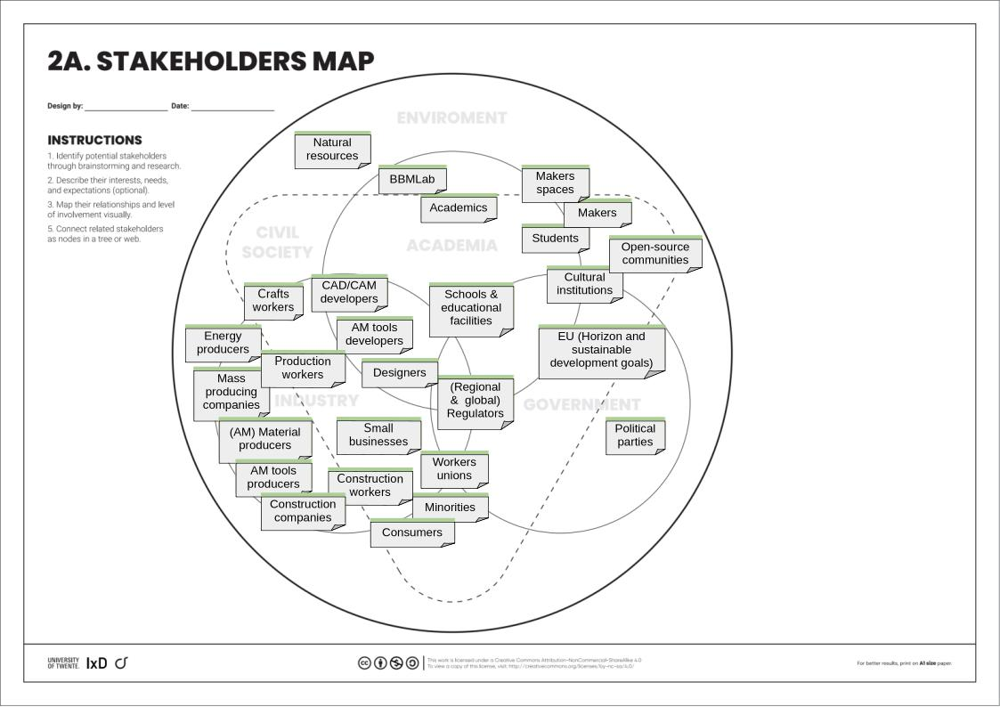

List of used and developed frameworks
This assignment will take a Design Science Research (DSR) approach (maedche2020). The goals is to go trough the entire DSR process as described below with possible one round of iterative redesign (due to time constraints).
The approach and description of the assignment will be described using the DSR grid (maedche2020), describing: Problem, Input knowledge, Research process, Concepts, Solution and Output knowledge.
The process may also draw from practices found in Research trough Design (janstappers2014).
Research question
How can sustainability be ensured in personal fabrication practices by design?
Sub-questions
How to ensure accessibility of personal fabrication to all population groups enforcing equality and community while maintaining sustainability?
How to ensure sustainability while not or minimally hindering the creative process and innovation?
How to fit sustainable personal fabrication and open-source appropriate design practices within the current system on a large scale?
Stakeholders
Thijs Warnars (author), University of Twente, University of Western Australia, BBMLab, Jairo de costa (supervisor), Makers communities (fablabs or other communities)
Time
This project is a Master assignment in Industrial Design Engineering at The University of Twente. The minimum time set out for this assignment is 40 weeks but my extend to ... weeks at maximum.
Kernel theories
Prior research this assignment stems from:
Approach
Personal fabrication
'The emergence of manufacturing at a personal level has been supported by the declining cost of desktop digital fabrication technologies, the increase of distributed production through collaborative making spaces and the dissemination of the Maker Culture on the internet. This paradigm shift in production is called personal fabrication and provides people with access to new production practices, increased capability and cutting-edge technologies.' (Rosangela2022)
Sustainability
‘Sustainable Development is positive socioeconomic change that does not undermine the ecological and social systems upon which the communities and society are dependant. Its successful implementation requires integrated policy, planning, and social learning processes; its political viability depends on the full support of the people it affects through their governments, their social institutions, and their private activities.’ (berke1999)
Distributed economy
'... is currently best described as a vision by which different innovative development strategies can be pursued in different regions.' (johansson2005)
Open-source appropriate technologies (OSAT)
Is a combination between the terms 'open-source' and 'appropriate technology' AT. Were appropriate technology means:
'those technologies that are easily and economically used from readily available resources by local communities to meet their needs, must comply with environmental, cultural, economic, and educational resource constraints of the local community' (pearce2010).
Open-source adds another facet to this term described by pearce2010 as follows:
'In parallel to the open source movement in software, OSAT allows technology users to be developers simultaneously and share the open “source code” of their physical AT designs. Thus, rather than programming code, the “source code” for AT are material lists, directions, specifications, designs, 3-D CAD, techniques, and scientific theories needed to build, operate, and maintain AT. Users are free to use and modify the “source code” from any shared AT and, via the internet, can engage in a massive parallel world-wide peer review process to determine the best practices and solutions'.
New framework and approach to the design of sustainable artifacts for fabbing
Internal Research Assignment
Master IDE Graduation Project
Supervisors: Jairo da Costa
Contact: j.dacosta@utwente.nl
Research Group: Interaction Design (https://www.utwente.nl/en/et/dpm/chair/id/)
Collaboration: Dr. Rosangela Tenorio, University of Western Australia (UWA), Bio-based Materials Design Lab
In recent years, advances in ICT, including desktop manufacturing technologies, have enabled the implementation of circular and distributed production systems on an unprecedented scale. Making distributed production feasible through digital fabrication technologies can facilitate models of production and consumption that are more sustainable, promote citizen engagement, and facilitate disruptive innovation through technological leapfrogging. However, promising as it may be, fostering distributed production through personal fabrication is not inherently sustainable. In fact, democratising access to digital fabrication and disseminating Maker Culture through internet-based networks of collaborative knowledge will increase material consumption, artefact production, and waste disposal. For instance, through practices like product customisation and personal fabrication, citizens have increased their ability to affect ‘what’, ‘how’, and ‘how many’ artefacts are produced. This raises the question: How can citizens in resource-poor or constrained contexts be enabled to create sustainable solutions through personal fabrication practices?
This transdisciplinary project combines sustainable design engineering, grassroots innovation, appropriate technology, and citizen science. It explores how emerging technologies, such as digital fabrication, augmented reality, and AI tools, combined with locally available knowledge and inexpensive resources, converge to empower people in the transition to decentralised, equitable, and sustainable production systems. The project aims to develop an online platform for open-source appropriate technologies (OSAT) and personal fabrication processes that are compatible with citizens’ resources, knowledge, and skill levels, particularly in vulnerable and underserved populations. This platform will enable self-fabricated solutions through a combination of digital and physical construction processes. The project’s outcomes will include an online platform for sustainability|sustainable personal fabrication, revised OSAT prototypes, assembly, manufacturing, and upcycling manuals, as well as augmented experiences.
Notes: The results of this project will be available open-source and submitted to the Distributed Design Awards 2026 and Dutch Design Week 2026.
This is a collaborative effort with Dr. Rosangela Tenorio, an Associate Professor of Architecture at the University of Western Australia (UWA), along with the team from the Bio-based Materials Design Lab. The project aims to develop an online personal fabrication platform that educates citizens by co-designing and creating nature-based solutions addressing global environmental challenges through local, sustainable making. The platform will be closely connected to the bio-based materials lab Camp. The BBMLab Camp comprises a series of micro-credentials tailored for individuals who have completed a Bachelor’s Degree and are eager to learn about the application of biomaterials in design through desktop manufacturing technologies, particularly in engaging with climate action through sustainable production and consumption within the contexts of architecture and product design. The BBMLab Camp program empowers citizens to actively contribute to the transition towards alternative production and consumption systems by providing learning resources and a platform that enhances sustainability in open-source resources, customises solutions to local contexts, and fosters knowledge sharing between makers and the broader community. Furthermore, it involves the continuous development of innovative, sustainable, open-source products and resources for learning, such as circular furniture, blue-green panels, and making and upcycling manuals.
Case Studies
Distributed Design - https://distributeddesign.eu/
Open Desk Furniture - https://www.opendesk.cc/
Wiki Factory - https://wikifactory.com/community/projects
WikiHouse - https://www.wikihouse.cc/
Pilot Project (this project)
Uma Chair Digital Assembly Guide - https://bbmdesignlab.com/uma-chair-assembly-guide
Note: AR experience available on mobile only.
In recent years, advances in ICT, including desktop manufacturing technologies, have enabled the implementation of circular and distributed production systems on an unprecedented scale. Making distributed production feasible through digital fabrication technologies can facilitate models of production and consumption that are more sustainable, promote citizen engagement, and facilitate disruptive innovation through technological leapfrogging. However, promising as it may be, fostering distributed production through personal fabrication is not inherently sustainable. In fact, democratising access to digital fabrication and disseminating Maker Culture through internet-based networks of collaborative knowledge will increase material consumption, artifact production, and waste disposal. For instance, through practices like product customisation and personal fabrication (da Costa Junior et al., 2024). Therefore, the question is posed:
How can sustainability be ensured in personal fabrication by design?
This transdisciplinary project combines sustainable design engineering, grassroots innovation, appropriate technology, and citizen science. It explores how emerging technologies, such as digital fabrication, augmented reality, and ethical AI tools, combined with locally available knowledge and inexpensive resources, converge to empower people in the transition to decentralised, equitable, and sustainable production systems. The project aims to develop an online platform for open-source appropriate technologies open-source appropriate technologies (OSAT) and personal fabrication processes that are compatible with citizens’ resources, knowledge, and skill levels, particularly in vulnerable and underserved populations. This platform will enable self-fabricated solutions through a combination of digital and physical construction processes. The project’s outcomes will include an online platform for sustainable personal fabrication, revised OSAT prototypes, assembly, manufacturing, and upcycling manuals, as well as augmented experiences (da Costa Junior et al., 2024).
Figure 1: Filled DSR grid describing this project
This assignment will take a Design Science Research (DSR) approach (Maedche et al., 2020). The approach and description of the assignment are described using the DSR grid (Maedche et al., 2020), as can be seen in figure 1.
First, the environment (problem space) will be defined and contextualised using different tools and frameworks like stakeholder maps and STEEPV cards. Next to this a knowledge base will be build containing different frameworks, methodologies and literature. The following papers will act as the groundwork for this project: (Gershenfeld, 2012; Johansson et al., 2005; Kohtala, 2015; Kohtala & Hyysalo, 2015; Rosangela & da Costa, 2022) and mainly (da Costa Junior et al., 2024). Further literature research will be conducted to broaden both the environment (problem/solution space) and the knowledge base.
After initial building of the environment and knowledge base the design phase will start. Here artifact and theory building will be done in an iterative process with empirical evaluation of the results. During this process applications will be made for in the environment (solution space) and additions will be made to the knowledge base.
The final deliverables of this project will be the platform for OSAT as described earlier and a design methodology for designing open-source sustainable products for personal fabrication. This methodology will be delivered along side a set of tools that designers can use to apply this methodology.
Personal fabrication is an upcoming topic that could have many implications for sustainable production, as said in da Costa Junior et al., 2024: ‘Research on personal fabrication needs to be conducted while this phenomenon is still at its early stage so that improvements can be made to ensure a future compatible with sustainable development goals.’
Personal fabrication could completely reshape how products are made and distributed and might even mark a new industrial revolution. This gives companies, governments, civilians and researchers a chance to shape this systems as it comes to be. Making it more important then ever to map different perspectives and approaches in order to provide the priorly mentioned stakeholders with the proper tools to shape this transition in a favourable way.
Lastly, this assignment offers the graduation student a great opportunity to explore new technologies, methodologies, design practices and gain more experience in empirical academic practices providing great educational value.
da Costa Junior, J., Tenorio, R., & dos Santos, A. (2024). Enabling Personal Fabrication for a Sustainable Built Environment. In M. A. Abraham (Ed.), Encyclopedia of Sustainable Technologies (Second Edition) (pp. 473–483). Elsevier. https://doi.org/10.1016/B978-0-323-90386-8.00037-1
Gershenfeld, N. (2012). How to Make Almost Anything.
Jan Stappers, P., & Giaccardi, E. (2014). Research through Design. Interaction Design Foundation - IxDF. https://www.interaction-design.org/literature/book/the-encyclopedia-of-human-computer-interaction-2nd-ed/research-through-design
Johansson, A., Kisch, P., & Mirata, M. (2005). Distributed economies – A new engine for innovation. Journal of Cleaner Production, 13(10), 971–979. https://doi.org/10.1016/j.jclepro.2004.12.015
Kohtala, C. (2015). Addressing sustainability in research on distributed production: An integrated literature review. Journal of Cleaner Production, 106, 654–668. https://doi.org/10.1016/j.jclepro.2014.09.039
Kohtala, C., & Hyysalo, S. (2015). Anticipated environmental sustainability of personal fabrication. Journal of Cleaner Production, 99, 333–344. https://doi.org/10.1016/j.jclepro.2015.02.093
Maedche, A., vom Brocke, J., & Hevner, A. (2020). (PDF) Introduction to Design Science Research. In ResearchGate. https://doi.org/10.1007/978-3-030-46781-4_1
Rosangela, T., & da Costa, J. (2022). SPECTACLE: Bio-Based Materials Design Lab 2019-2021 works. https://research.utwente.nl/en/publications/spectacle-bio-based-materials-design-lab-2019-2021-works
Approach
maedche2020: Introduction to Design Science Research.
janstappers2014: description of Research trough Design.
From assignment description
gershenfeld2012: Application and implications of emerging personal fabrication methods.
johansson2005: Description of distributed economies and their benefits.
kara2022: Literature review and summation of approaches towards circular economic systems.
kohtala2014: Literature review on distributed production and sustainability.
kohtala2015: Testing of knowledge and application of sustainable considerations by prominent makers.
Rosangela2022: Summation of projects conducted by the BBMLab.
dacostajunior2024: On approaches and issues for sustainability concerning personal fabrication.
EU SDG
eu-lex: summary legislation SDG.
eu-horizon: description of EU horizon program.
vonderleyen2024: political guidelines EU for 2024-2029.
From other sources and literature review papers
berke1999: Defining Sustainable Development.
pearce2010: Exploring and defining OSAT its benefits, drawbacks and steps needed to apply it.
steffen2003: Explores sustainable concepts for mass customisation systems (mini-plants and crafts workers)
From literature research
dhinesh2022: On recent trends in AM of electronics.

Currently there are a lot of socio-technical barriers to PF, such as:
As described in dacostajunior2024: 'in low-income markets, behaviors toward a product or service are profoundly influenced by local norms, beliefs, and circumstances. Thus, the success of such socio-technical transformation requires innovation processes that are socially inclusive to local communities in terms of social norms, capabilities, knowledge, economic reality, available resources, and functional requirements, sharing a set of principles and vision known as grassroots innovation processes'
In order to achieve sustainability within a system of distributed production the culture of constant consumption and throwaway culture need to be reshaped to sustainable practices. This can be achieved trough circular practices or even completely designing waste out of the product kara2022. Meaning that a product is designed to be useful beyond end-of-life and therefore never becoming waste.
As found in kohtala2015 current makers are not much concerned with sustainability and when prompted they mostly look into reducing waste by improving the production technologies. This is apposed to makers that identify them selves as concerned with sustainability, they opt more towards reuse.
As the cultures described in this section are very embedded in current society changing these cultures could prove challenging and therefore being an inhibiting factor.
Education and already existing makers communities can have a huge role in shaping future systems and makers. Therefore, it is important to make sure the educational material is well made and existing makers are property informed about sustainability and their responsibility in this. The latter is especially concerning as currently knowledge and consideration of sustainability seems to be lacking in makers communities (kohtala2015).
Additionally, as noted in kohtala2015 pro-environmental maker did pay much more attention to sustainability of AM solutions, design and design space. However, this group payed less attention to emerging technologies and their impact, such as: new materials (toxicity), nano-technology and PF on a large scale.
This shows the importance of proper education within the makers space but also how effective proper information and education can be if done correctly.
As research on AM continues many new applications and possibilities of the technology are found. One of those new applications is the production of electronics dhinesh2022. With this technology a new step in PF can be foreseen. Giving people the ability to produce their own electronic devices with much more ease then ever before. Additionally this also brings the idea of locally producing full new AM tools using other AM tools closer gershenfeld2012. This idea could greatly increase the accessibility of all people to AM tools and therefore spreading PF on a much wider scale.
However, there are also concerns with this development. Just like some already widely used AM tools safety is a concern due to toxicity of materials and other possible dangers that come with the production process. This is especially a concern for PF as people may not be well informed about the risk. Furthermore, AM and PF of electronics will also bring sustainability concerns as it might be difficult to locally reuse and recycle these electronics that might even be printed inbedded into products.
As explored by gershenfeld2012, the future may hold true personal fabrication machines. In the paper these devices are described as follows:
'Unlike 3-d printers today, these will be able to build complete functional systems at once, with no need for parts to be assembled. The aim is to not only produce the parts for a drone, for example, but build a complete vehicle that can fly right out of the printer.'
similarly to the card describing 'AM and electronics' this conceptual technology holds the possibility to almost unlimitedly expand the possibilities for PF and significantly improve accessibility. However, with this come similar safety and sustainability concerns. In addition to these concerns: for safety a concern about PF of weapons becomes a more serious concern, with such advanced AM technologies it may become hard to predict what people come up with, this is obviously a double edged sword. Furthermore, if this AM technology were to be introduced in current society huge sustainability concerns would arise, as current consumer and throwaway culture may very well increase waste instead of prevent it.
As digital artefacts and product become more common or even the norm it is important to realise the increasing importance of software and file formats that can produce, read and alter these artefacts. Software like CAD and CAM will play a significant role in the development but also the accessibility of digital artefacts (dacostajunior2024).
If OSAT are the norm in a distributed economy of PF that means that CAD and CAM tools will need to be accessible for everyone. This not only indicates the importance of FOSS but also that the software needs to be easy to use and install (on all platforms), educational resources need to be freely available, and file formats that make of digital artefacts need to be standardised or atleast always accessible.
With the emergence of PF many challenges can be observed in combining this with our current scio-political system. As described in johansson2005: 'A centralised and hierarchical production system is poorly suited for coping with this new era of open innovation'. Therefore, the current economical system needs to be re-analysed and morphed into something that will facilitate sustainable PF.
One of the proposed enabling economic systems would be distributed economy. Where flexibility, sustainability, equality, welfare and innovation become driving factors of the system instead of endless increase in profit and pleasing shareholders resulting in enshittification.
Circular economy calls for a circular approach towards production and the creation of closed loop systems (kara2022). Some practices within this ideology could greatly support design practices for PF and with this ensuring more sustainable practices.
However, it is good to note not all practices within circular economy are compatible with PF, OSAT and distributed economies. This is because many circular economical practices are much based around corporate sustainability, which could be criticised for forgoing environmentally sustainable practices if it isn't deemed profitable. Additionally, many circular economical practices focus on PSS as this approach will allow companies to have control over the entire PLC. However, these processes could also be seen as detrimental for equality as ownership (of anything) for lower income people will be a thing of the past.
No mater how great free PF would be for accessibility and equality; OSAT, PF and design for PF will need a way of monetisation. This is because as PF practices grow more widely used they will start making mass production and jobs in this field redundant. Normally this would only mean a shift of these workers to this new field, but this does mean PF services and products will need to be monetised in one way or the other.
Of course this would be a good chance to question the need for monetisation and whether this really benefits sustainability and equality. However, other then 'this is out of scope for this assignment' it is good to recognise that systems can't just change overnight. Therefore, some form of compatibility with the current system will always be required for a transformative movement.
Some possible solutions to this monetisation problem may be found in OSS. This could be systems such as:
Some other possible monetisation methods could also be imagined like:
This would then all be applied in some way to PF. Of course, trough unforeseen developments and distributed economies new forms of monetisation could always emerge.
The current consumerist and throwaway culture is currently one of the biggest challenges to tackle with respect to sustainable PF implementation. As discussed in kara2022, consumerism is responsible for what we know as 'throwaway society'. This is one of the biggest reasons for the growing societal affluence. In order to create more sustainable practices in makers spaces but also broader society a shift away from consumerism is required. A system where:
However, this change is more easily described then achieved. thorough planning, time, consensus, and teamwork will be required to achieve this change.
The more production practices decentralise the more important local sustainable material acquisition is. As production becomes more distributed it becomes more of a challenge and polluting to transport materials to these production sites from far away places. Therefore, to ensure sustainability renewable materials need to be sourced locally.
This could be a great benefit as local sourcing of materials stimulates local communities, jobs and culture. However, this does mean more research needs to be done on different types of materials for AM production as different places might not allow for access to the same raw materials (Rosangela2022).
As open-source development is a (often) democratic community driven development style. Sustainability might not be taken into account if not considered by the main contributeskohtala2015. Therefore, ways need to be found to inform and motivate digital open-source designers to design sustainably or even make sustainability inherent within digital artefact production through designed design limitations within CAD, CAM or distribution platforms.
Of course, the latter of these suggestions may lead to limitations of creativity and with that innovation. However, it may also increase creativity towards designing new solutions within the constraints of the environment.
since 1990 the EU SDGs have been defined in EU treaties as long term goals for external and internal policies (eu-lex). Now these SDGs are at the heart of the EU 2030 agenda, for instance being taken up in vonderleyen2024's political guidelines of 2024 until 2029.
These guidelines may enable research and development of sustainable PF practices and experimentation trough distributed economical practices. For instance, trough the support of programs such as eu-horizon. The great focus of the SDGs on equality and sustainability also indicates many possibilities for sustainable PF support by these policies.
Apart from safety concerns of PF for the user (during the production process), like toxic fumes or other physical hazards, there are also other safety concerns to worry about. Because of the high amount of production freedom PF might allow individuals to obtain 'weapons of individual destruction' such as fire arms (gershenfeld2012). This concern might lead to regulatory issues as the distributed nature of the production process is hard to regulate and control.
Due to the digital nature of artefacts within the PF process questions arise on the method of regulating these products. The challenges observed in regulating digital software and content like social media would likely also be a challenge for digital artefacts. Therefore, similar question may also arise around this problem, such as: what content should be censored and where to draw the line?
This is already a sensitive topic when it comes to the regulation of non-PF digital content. Digital artefact for PF may add a complete new dimension and set of challenges to this problem.
A parallel could be drawn here with ensuring sustainable design. Will the digital space regulate itself as long as proper education is provided or is regulation a better approach with possible limitations on creativity and sharing ideas?
as described in dacostajunior2024 one of the critical challenges of PF to overcome is: 'intellectual property considerations regarding using and sharing protected designs'. When looking at OSS as example the solution to this problem seems trivial. digital artefacts and designs will be protected by similar licenses as OSS and trough this proper conduct of sharing and usage is maintained by the community. However, it could be imagined this problem will cause more challenges if PF design is implemented on a larger scale. Especially when monetisation for designers starts playing an important role within the maintenance of the system.
OSS is currently the closest similar practising field as PF. Therefore, it is important to look to this field and see the accomplishments and pitfalls already found in this field. These experiences may prove to be great assets towards the successful implementation of OSAT, PF and design of digital artefacts. This goes hand in hand with analysing the philosophy behind the OSS movement and its applicability of OSAT and PF.
As AI is more and more widely used questions about the appropriateness of the current use of the technology start getting more relevant. When it comes to sustainable PF the benefits of AI for improving sustainable practices and plausible designs can be imagined. However, also in the context of OSAT the question of appropriateness of AI is very relevant. Especially considering concerns about over-reliance on AI, sustainability issues and usage of intellectual and open-source property without permission or proper license usage. therefore, ethical and appropriate ways of using AI need to be explored for usage in OSAT.
Lastly, it is also important to mention AI's sensitivity to orchestrated misinformation campaigns and propaganda. Due the the nontransparent practices of AI providers it is never certain what information is fed to the AI models but also what information is censored or promoted.
System showing how education and equality are essential in tackling climate problems.
System showing how makers spaces can be used to promote education, equality and accessibility in order to increase the use of circular consumption habits and forgo throwaway culture.